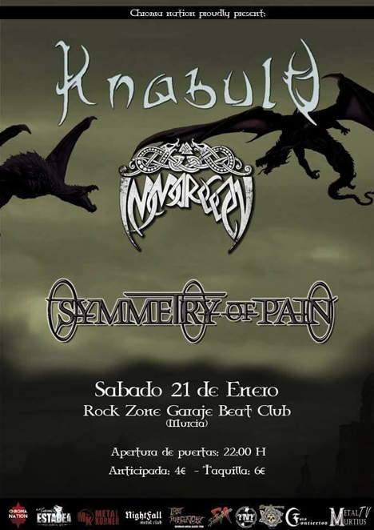

- 
Iron Maiden «The Future Past Tour 2023» en España
-Noticias -27 octubreIron Maiden, la banda de heavy metal más grande de todos los tiempos, vuelve el próximo año a nuestro país con una exclusiva gira, «The Future Past Tour 2023», y tres fechas por toda la península que tendrán lugar el 18 de julio en Barcelona, el 20 en Murcia y el 22 en Bilbao.
Steel Panther – Route Resurrection
-Noticias -20 de eneroRoute Resurrection nos trae a Steel Panther con tres fechas en España
Rage y Firewind en Murcia
-Noticias -9 de eneroRage + Firewind + Arenia + Darker Half estarán tocando este jueves 18 de enero en la sala Garaje Beat club y el 19 en la Sala Mon de Madrid
Lacuna Coil desembarca en la península con tres fechas que no te puedes perder
-Noticias -24 de noviembreLos italianos Lacuna Coil descargarán su Metal alternativo con la inigualable Cristina Scabbia al frente, y acompañados de los suizos Cellar Darling y los sinfónicos Sinheresy.
¡El Resurrection Fest anuncia sus primeras bandas!
-Noticias -17 noviembreEl festival gallego, que se celebrará del 11 al 14 de julio en la localidad de Viveiro, ha anunciado más de cincuenta bandas de una tacada para su próxima edición.
Gira española de Inglorious.
-Noticias -16 de noviembreTras el lanzamiento de su segundo disco “Inglorious II” la banda regresa dispuesta a darlo todo en esta gira presentación.
Gira española de Epica + Vuur + Myrath.
-Noticias -16 de noviembreLos gigantes del metal sinfónico Epica vuelven a las mejores salas europeas para su “ULTIMATE PRINCIPLE TOUR».
Gira nacional 25 Aniversario de W.A.S.P.
-Noticias -27 octubreReidolized es el nombre de Gira 25 aniversario de W.A.S.P. de su gran «The Crimson Idol», álbum emblemático en la historia de la banda de Blackie Lawless. Les acompañarán en esta aventura Beast in Black en 4 fechas imperdibles en nuestro país.
¡Cuenta atrás para Airbourne!
-Noticias 28 septiembre¡Cuenta atrás para cruzarnos en el camino de Airbourne! Y corren las arenas del tiempo más rápido que el viento.
ADE Conquering Hispania Tour
-Noticias -18 septiembreDesde la poderosa Italia viene el ejército romano formado por los cinco miembros de ADE con su tercer álbum, «Carthago delenda est», en su «Conquering Hispania Tour».
AIRBOURNE »BREAKIN OUTTA HELL» TOUR
-Noticias -14 de septiembre/a>AIRBOURNE »BREAKIN OUTTA HELL» TOUR
Angelus Apatrida + Hitten En Murcia
-Noticias -25 de septiembreAngelus Apatrida llevará su apabullante directo a la sala Garaje Beat Club de Murcia el próximo 29 de septiembre. Heavy metal is the law!
KNABULU presentan nuevo EP en Murcia
-Noticias -17 de eneroLos murcianos KNABULU presentan «Voices of the North», su 2º trabajo, en la sala Garaje Beat Club en Murcia este sábado 21.
MAD MAX, Sábado 28 de enero en la Garaje Beat Club (MURCIA)
-Noticias -25 de eneroEste sábado tenemos el placer de contar con la veterana banda alemana de Hard Rock Mad Max en la Sala Garaje Beat Club de Murcia, comandada por la conocida voz de Michael Voss (Michael Schenker, Casanova, Wolfpakk…). Les acompañarán los murcianos Raging Fire, en una cita que no te
SUIDAKRA actuará este domingo en Murcia
-Noticias -17 eneroLos pioneros del celtic/viking metal europeo Suidakra estarán este domingo en Murcia en un concierto especial, junto a bandas de Levante y Murcia como HALO, DRUEIDA, THRASHGRESSIVE y BROWN BEAST.
DARE + XTASY + GÜRU EN SALA TOTEM DE PAMPLONA (13-1-17)
-Noticias -9 de enero“DARE vuelve presentando su nuevo y noveno disco “Sacer Ground”, una cita importante para los amantes del Rock/Hard rock melódico”
DOS SEMANAS PARA SABATON + ACCEPT + TWILIGHT FORCE EN SANTANA 27 (19-1-17 BILBAO)
-Noticias -7 de enero“Tan solo dos semanas para que el equipo de Madness Live nos traiga a España una de las giras más esperadas de este año.”